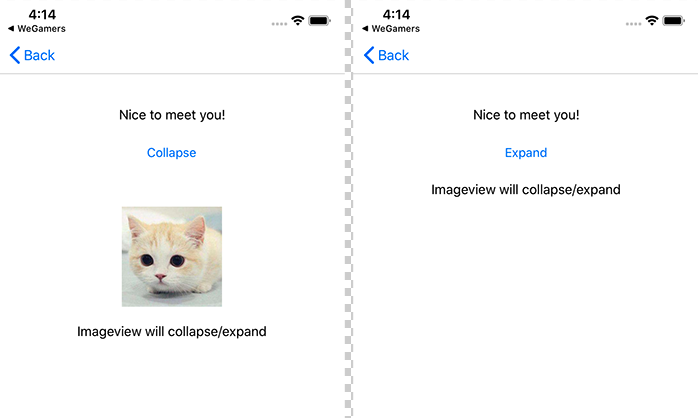

<!DOCTYPE html>
<html lang="en">
<head><meta name="generator" content="Hexo 3.9.0">
    <meta charset="UTF-8">
<meta name="viewport" content="width=device-width, user-scalable=no, initial-scale=1.0, maximum-scale=1.0, minimum-scale=1.0">
<meta http-equiv="X-UA-Compatible" content="ie=edge">

    <meta name="description" content="喜欢在夜深人静的时候敲键盘">


<title>MasonryExtends | Coding Pub</title>


    <!-- stylesheets list from _config.yml -->
    
    <link rel="stylesheet" href="/css/style.css">
    


    <!-- scripts list from _config.yml -->
    
    <script src="/js/script.js"></script>
    
    <script src="/js/tocbot.min.js"></script>
    


    
    
        
    


</head>
<body>
    <div class="wrapper">
        <header>
  <nav class="navbar">
    <div class="container">
      <div class="navbar-header header-logo">
        <a href="/">CodingPub&#39;s Blog</a>
      </div>
      <div class="menu navbar-right">
        
        <a class="menu-item" href="/archives">Posts</a>
        
        <a class="menu-item" href="/category">Categories</a>
        
        <a class="menu-item" href="/tag">Tags</a>
        
        <a class="menu-item" href="/about">About</a>
        

        <form class="search" action="https://google.com/search" method="get" accept-charset="utf-8" target="_top">
          <input type="search" id="search" name="q" autocomplete="off" maxlength="20" placeholder="Search">
          <input name="sitesearch" value="codingpub.github.io" type="hidden">
        </form>

        <input id="switch_default" type="checkbox" class="switch_default">
        <label for="switch_default" class="toggleBtn"></label>
      </div>
    </div>
  </nav>

  
  <nav class="navbar-mobile" id="nav-mobile">
    <div class="container">
      <div class="navbar-header">
        <div>
          <a href="/">CodingPub&#39;s Blog</a><a id="mobile-toggle-theme">·&nbsp;Light</a>
        </div>
        <div class="menu-toggle" onclick="mobileBtn()">&#9776; Menu</div>
      </div>
      <div class="menu" id="mobile-menu">
        
        <a class="menu-item" href="/archives">Posts</a>
        
        <a class="menu-item" href="/category">Categories</a>
        
        <a class="menu-item" href="/tag">Tags</a>
        
        <a class="menu-item" href="/about">About</a>
        
      </div>
    </div>
  </nav>
</header>
<script>
  var mobileBtn = function f() {
    var toggleMenu = document.getElementsByClassName('menu-toggle')[0]
    var mobileMenu = document.getElementById('mobile-menu')
    if (toggleMenu.classList.contains('active')) {
      toggleMenu.classList.remove('active')
      mobileMenu.classList.remove('active')
    } else {
      toggleMenu.classList.add('active')
      mobileMenu.classList.add('active')
    }
  }
</script>

        <div class="main">
            <div class="container">
    <div class="post-toc">
    <div class="tocbot-list">
    </div>
    <div class="tocbot-list-menu">
        <a class="tocbot-toc-expand" onclick="expand_toc()">Expand all</a>
        <a onclick="go_top()">Back to top</a>
        <a onclick="go_bottom()">Go to bottom</a>
    </div>
</div>

<script>
    document.ready(
        function () {
            tocbot.init({
                tocSelector: '.tocbot-list',
                contentSelector: '.post-content',
                headingSelector: 'h1, h2, h3, h4, h5',
                collapseDepth: 1,
                orderedList: false,
                scrollSmooth: true,
            })
        }
    )

    function expand_toc() {
        var b = document.querySelector(".tocbot-toc-expand");
        tocbot.init({
            tocSelector: '.tocbot-list',
            contentSelector: '.post-content',
            headingSelector: 'h1, h2, h3, h4, h5',
            collapseDepth: 6,
            orderedList: false,
            scrollSmooth: true,
        });
        b.setAttribute("onclick", "collapse_toc()");
        b.innerHTML = "Collapse all"
    }

    function collapse_toc() {
        var b = document.querySelector(".tocbot-toc-expand");
        tocbot.init({
            tocSelector: '.tocbot-list',
            contentSelector: '.post-content',
            headingSelector: 'h1, h2, h3, h4, h5',
            collapseDepth: 1,
            orderedList: false,
            scrollSmooth: true,
        });
        b.setAttribute("onclick", "expand_toc()");
        b.innerHTML = "Expand all"
    }

    function go_top() {
        window.scrollTo(0, 0);
    }

    function go_bottom() {
        window.scrollTo(0, document.body.scrollHeight);
    }

</script>  
  <article class="post-wrap">
    <header class="post-header">
      <h1 class="post-title">MasonryExtends</h1>
      
      <div class="post-meta">
         Author:
        <a itemprop="author" rel="author" href="/">Xiaobin, Lin</a>
         
        <span class="post-time">
          Date: <a href="#">2019-09-07</a>
        </span>
         
        <span class="post-category">
          Category: 
          <a href="/categories/iOS/">iOS</a>
          
        </span>
        
      </div>
      
    </header>

    <div class="post-content">
      <p><a href="https://github.com/Tovema-iOS/TMMasonryExtends" target="_blank" rel="noopener">TMMasonryExtends</a> 是一个 <a href="https://github.com/SnapKit/Masonry" target="_blank" rel="noopener">Masonry</a> 扩展库，可以用它为视图显示和隐藏状态设置不同的约束。</p>
<p>封装这个库主要是为了解决视图显示、隐藏的时候引入的大量条件判断和约束变更的代码。</p>
<p>效果图：</p>
<p></p>
<p>示例代码</p>
<figure class="highlight objc"><table><tr><td class="code"><pre><span class="line"><span class="meta">#import <span class="meta-string">&lt;TMMasonryExtends/TMMasonryExtends.h&gt;</span></span></span><br><span class="line"></span><br><span class="line">[<span class="keyword">self</span>.imageView mas_makeConstraints:^(MASConstraintMaker *make) &#123;</span><br><span class="line">    <span class="comment">// self.imageView 隐藏时，顶部间距自动设置为 0</span></span><br><span class="line">    make.top.equalTo(<span class="keyword">self</span>.btnToggle.mas_bottom).offset(<span class="number">50</span>).tm_collapseWhenHidden(<span class="keyword">self</span>.imageView);</span><br><span class="line">    <span class="comment">// self.imageView 隐藏时，高度设置为 0</span></span><br><span class="line">    make.height.mas_equalTo(<span class="number">0</span>).tm_installWhenHidden(<span class="keyword">self</span>.imageView);</span><br><span class="line">    <span class="comment">// self.imageView 显示时，高度设置为 120</span></span><br><span class="line">    make.height.mas_equalTo(<span class="number">120</span>).tm_installWhenShow(<span class="keyword">self</span>.imageView);</span><br><span class="line">    make.width.equalTo(<span class="keyword">self</span>.imageView.mas_height);</span><br><span class="line">    make.centerX.mas_offset(<span class="number">0</span>);</span><br><span class="line">&#125;];</span><br></pre></td></tr></table></figure>

<h2 id="Usage"><a href="#Usage" class="headerlink" title="Usage"></a>Usage</h2><p>引入头文件</p>
<figure class="highlight objc"><table><tr><td class="code"><pre><span class="line"><span class="meta">#import <span class="meta-string">&lt;TMMasonryExtends/TMMasonryExtends.h&gt;</span></span></span><br></pre></td></tr></table></figure>

<p>Masonry 扩展接口</p>
<figure class="highlight objc"><table><tr><td class="code"><pre><span class="line"><span class="class"><span class="keyword">@interface</span> <span class="title">MASConstraint</span> (<span class="title">TMExtends</span>)</span></span><br><span class="line"></span><br><span class="line"><span class="comment">/**</span></span><br><span class="line"><span class="comment"> view 隐藏时自动将约束值设置为 0，显示时恢复原值</span></span><br><span class="line"><span class="comment"> */</span></span><br><span class="line">- (MASConstraint * (^)(<span class="built_in">UIView</span> *view))tm_collapseWhenHidden;</span><br><span class="line"></span><br><span class="line"><span class="comment">/**</span></span><br><span class="line"><span class="comment"> view 隐藏时安装此约束，反之卸载</span></span><br><span class="line"><span class="comment"> */</span></span><br><span class="line">- (MASConstraint * (^)(<span class="built_in">UIView</span> *view))tm_installWhenHidden;</span><br><span class="line"></span><br><span class="line"><span class="comment">/**</span></span><br><span class="line"><span class="comment"> view 显示时安装此约束，反之卸载</span></span><br><span class="line"><span class="comment"> */</span></span><br><span class="line">- (MASConstraint * (^)(<span class="built_in">UIView</span> *view))tm_installWhenShow;</span><br><span class="line"></span><br><span class="line"><span class="keyword">@end</span></span><br></pre></td></tr></table></figure>

<h2 id="Installation"><a href="#Installation" class="headerlink" title="Installation"></a>Installation</h2><p>TMMasonryExtends is available through <a href="https://cocoapods.org" target="_blank" rel="noopener">CocoaPods</a>. To install it, simply add the following line to your Podfile:</p>
<figure class="highlight ruby"><table><tr><td class="code"><pre><span class="line">pod <span class="string">'TMMasonryExtends'</span>, <span class="string">'~&gt; 1.0'</span></span><br></pre></td></tr></table></figure>

<h2 id="Requirements"><a href="#Requirements" class="headerlink" title="Requirements"></a>Requirements</h2><p>iOS 8.0</p>
<h2 id="Other"><a href="#Other" class="headerlink" title="Other"></a>Other</h2><p><em>唠叨的记录放到后面来说吧，不感兴趣的小伙伴可以 Pass。</em></p>
<p>像文章开头提到的，封装这个库主要是为了解决视图显示、隐藏时，引入了大量条件判断和约束变更的代码，不利于代码日常维护。写过相对复杂视图的小伙伴，应该会同意这个观点。这个问题并不是使用 Masonry 进行视图布局带来的，而是使用约束布局必然要面对的问题。</p>
<p>迫切的需要<code>TMMasonryExtends</code>，是因为换工作以后，新项目组使用 Masonry 管理布局，而且在刷新 UI 时，有大量的条件判断和代码分支，维护起来实在头疼。</p>
<p><code>TMMasonryExtends</code>最初的灵感来源于 <a href="https://github.com/forkingdog/UIView-FDCollapsibleConstraints" target="_blank" rel="noopener">UIView-FDCollapsibleConstraints</a>，它针对 xib 布局提供了自动折叠约束的功能。之前工作的时候使用 xib 开发部分功能，那时候觉得这个很酷、很方便，不过使用过一段时间，总觉得缺了点什么。因此在开发<code>TMMasonryExtends</code>时，除了支持自动折叠约束值，还支持针对 view 显式/隐藏状态设置不同的约束。</p>
<p><code>TMMasonryExtends</code>的第一个版本也因为受 UIView-FDCollapsibleConstraints 的设计影响，虽然实现的结果一样，但是对外的接口并不是这样，跟 UIView-FDCollapsibleConstraints 差不多，也是记录需要变更的约束，在需要的时候自动处理变更。在实际使用时，发现经常需要定义额外的 MasConstraint 变量，也不够<code>Masonry</code>化，因此重新设计了现在的接口。理想状态下，我们希望是设计好了再下手，现实总是需要我们走一些弯路，自己挖下的坑要自己填呀，又花了不少时间修改项目代码。</p>
<p>办法总比问题多，关键是要能发现问题，并解决问题，实在搞不定，抛出问题也行呀。</p>

    </div>

    
    <section class="post-copyright">
      
      <p class="copyright-item">
        <span>Author:</span>
        <span>Xiaobin, Lin</span>
      </p>
       
      <p class="copyright-item">
        <span>Permalink:</span>
        <span><a href="http://codingpub.github.io/2019/09/07/MasonryExtends/">http://codingpub.github.io/2019/09/07/MasonryExtends/</a></span>
      </p>
       
      <p class="copyright-item">
        <span>License:</span>
        <span>Copyright (c) 2019 <a href="http://creativecommons.org/licenses/by-nc/4.0/">CC-BY-NC-4.0</a> LICENSE</span>
      </p>
       
    </section>
    
    <section class="post-tags">
      <div>
        <span>Tag(s):</span>
        <span class="tag">
           
          <a href="/tags/UI布局/"># UI布局</a>
          
          <a href="/tags/约束/"># 约束</a>
           
        </span>
      </div>
      <div>
        <a href="javascript:window.history.back();">back</a>
        <span>· </span>
        <a href="/">home</a>
      </div>
    </section>
    <section class="post-nav">
      
      <a class="prev" rel="prev" href="/2019/09/08/提升iOS打包速度/">提升iOS打包速度</a>
       
      <a class="next" rel="next" href="/2019/04/26/iOS动态库/">iOS动态库</a>
      
    </section>
  </article>
</div>

        </div>
        <footer id="footer" class="footer">
    <div class="copyright">
        <span>© Xiaobin, Lin | Powered by <a href="https://hexo.io" target="_blank">Hexo</a> & <a href="https://github.com/Siricee/hexo-theme-Chic" target="_blank">Chic</a></span>
    </div>
</footer>

    </div>
</body>
</html>
